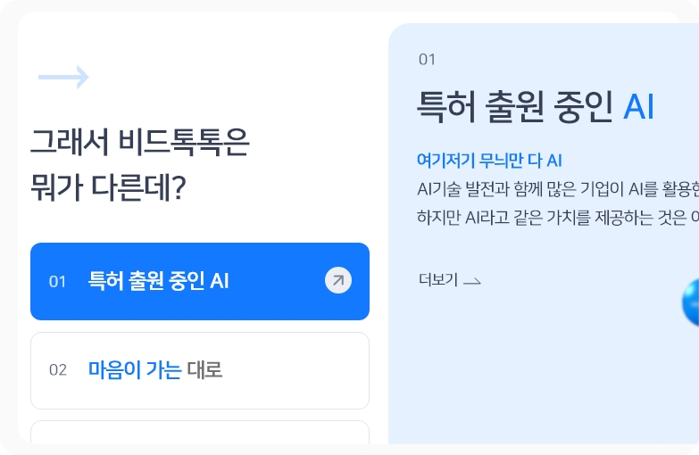

비드톡톡 메인 리뉴얼
디자인, 퍼블리싱 (기여 100%) 사이트 바로가기
PUBLISHING

customPaging 함수를 이용하여 dots 버튼에 태그를 넣어 각각의 내용을 담아 링크 이동할 수 있도록 구현하였습니다.

메인 슬라이드를 가리지 않기 위해, 일정 시간이 흐른 뒤 아코디언 메뉴로 접히도록 하였습니다.


무한루프 밸트에 마우스 오버시 false, play 기능을 추가하여 사용자가 컨텐츠를 확인하도록 만들었습니다.


메인 슬라이드의 상세 페이지는 기존의 컴포넌트와 인터렉션을 활용하여 제작하였습니다.